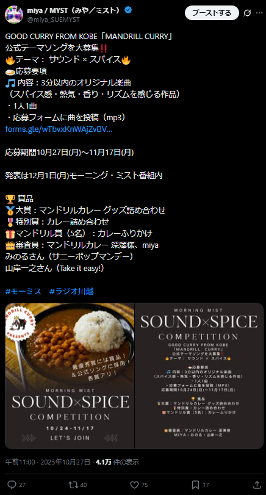

1. なぜ、いま「お店の歌（公式ソング）」が必要なのか？
最近、スマートフォンで動画（YouTubeやTikTokなど）を見る人が急増しています。こうしたネット広告やお店の紹介動画では、映像と同じくらい「耳に残る音楽やリズム」がとても重要になっています。
文字や画像だけの広告は見逃されやすいですが、お店の特長や名前が入った楽しいメロディがあると、一瞬で「あ、あのお店の曲だ！」と思い出してもらえるようになり、他のお店との大きな違いを作ることができます。
今回は、プロに歌を注文するのではなく、ネット上の多くの音楽クリエイターに「曲を作ってもらうコンテスト」を提案いたします。
コンテストを開くと、応募するクリエイターたちが「いま〇〇店のための曲を作っているよ」と、作成途中の動画や出来上がった曲をご自身のSNS（TikTokやXなど）に次々と投稿してくれます。これにより、多額の広告費をかけなくても、クリエイターのファンたちを通じてお店の情報が自然と世の中に広がっていきます。
2. どんなイベント？（企画の概要）
ネット上で歌やボカロ曲を作っている全国のクリエイターへ向けて、お店の魅力を伝える明るくキャッチーな「公式ソング」を募集します。
| 募集するもの | [お店の名前] が入ったイメージソング （動画で使いやすいよう、15秒〜30秒程度の短いサビだけの応募もOKです） |
|---|---|
| 募集する期間 | 募集を開始してから約1ヶ月間 |
| 結果の発表 | 締め切りから約2週間後（ホームページやSNSで発表します） |
| 選び方 | 応募された楽曲はすべてオーナー様やスタッフの皆様が直接試聴し、お気に入りの作品を選出します。複雑な事前フィルターはなく、集まった個性豊かな音源をすべて確認できます。 |
3. コンテストを開くことで、お店が得られる3つのメリット
① クリエイター発信による「自然なクチコミと拡散」
クリエイターは「自分の作った曲を多くの人に聴いてほしい」という思いから、自ら積極的にSNS（YouTube、TikTokなど）で曲を紹介してくれます。お店が広告を出さなくても、クリエイターのフォロワーを通じて、幅広い人たちにお店がアピールされます。
② クリエイターのファンがお店のファンになる親近感
「自分の好きなクリエイターがお店の曲を作っている」という過程を見ることで、ファンはお店に対しても親近感を持つようになります。通常の広告よりも良い印象を持たれやすく、ファンがそのままお店のお客様になってくれる可能性が高まります。
③ 一度作れば「ずっと無料で自由に使える歌」が手に入る
コンテストで選ばれた曲は、著作権料などを気にせず、さまざまな用途でずっと使い続けることができます。
| おすすめの使い道 | 詳細とメリット |
|---|---|
| SNS動画のBGMに | お店のTikTokやInstagram、YouTubeにのせる動画の背景音楽として使えます（見逃し防止に効果的） |
| 店内のBGMに | お店オリジナルのBGMとして流すことで、他店にはない心地よい雰囲気作りと特別な空間を演出できます |
| CMやチラシのQRコードに | ローカルCMのジングルとして使ったり、チラシに曲のQRコードを載せて聴いてもらうことができます |
4. コンテストの準備：お店の「こだわり」アンケート例
コンテストを始める前に、オーナー様へお店の特徴や入れてほしい言葉についての簡単なアンケートを行います。その内容を基に、クリエイター向けの募集ルールを事務局がすべて作成します。
| アンケート項目 | 設定の例（Record Cafe Time様の場合） |
|---|---|
| お店やスタッフの雰囲気は？ | 温かみがある、のんびり、落ち着く（ログハウスでコーヒーを飲むのに合う曲） |
| 聴いた人にどう感じてほしい？ | 「ほっと一息つける」「静かで豊かな時間が流れる」「心地よい木漏れ日の中にいるような感覚」 |
| 曲に入れてほしい「必須の言葉」 | Record Cafe Time |
| 曲に入れてほしい「おすすめの言葉」 | ログハウス、珈琲（コーヒー）、レコード、深煎り、穏やか、リラックス | 避けてほしい「NGなイメージ」 | 激しいロックや大音量のノイズ、電子音が強すぎる曲、悲しい・寂しさをあおる曲調 |
5. お申込みからコンテスト開始までの流れ
お問い合わせから実際にコンテスト（楽曲募集）が開始されるまでの、約1〜2週間の準備の流れです。
| ステップ | 実施する内容 | オーナー様にしていただくこと |
|---|---|---|
| STEP 1 お打合せ・ヒアリング |
オンラインまたは対面にてお打ち合わせを行い、お店の魅力やこだわり、求める曲の雰囲気、賞品・特典のアイデアをヒアリングします。 | 簡単なアンケート（5分程度）へのご回答 |
| STEP 2 募集要項の決定・ご契約 |
ヒアリング内容を基に、事務局がコンテストの募集ルール（要項）を作成します。内容を確認・調整のうえ、正式なお申込みとなります。 | 提案された募集ルールの確認・承認 |
| STEP 3 特設サイト構築・事前告知 |
事務局にてクリエイター向けの応募特設サイトを構築。応募受付の準備と並行し、SNSやネット音楽シーンへ向けてコンテストの告知を開始します。 | -（事務局が全て準備・告知を行います） |
| STEP 4 コンテスト開始（募集） |
応募特設サイトがオープンし、全国のクリエイターからの楽曲募集が正式にスタートします。 | （よろしければ）公式SNSや店頭での告知協力 |
📋 お申込み・お振込みについて
企画へのご参加が決まりましたら、所定の申込書をご提出いただき、下記の指定口座へ費用のお振込みをお願いいたします。お振込み確認後、特設募集ページの作成およびクリエイターへの告知準備を開始いたします。
法人第二営業部（支店コード：102）
口座番号：普通預金 2465883
口座名義：ｶ)ｺｴﾄﾞﾐｭｰｼﾞｯｸﾗﾎﾞ
6. 開始から発表までの流れ
準備から結果発表まで**約2ヶ月**で完了します。スケジュール管理や応募データのとりまとめはすべて事務局が代行します。オーナー様にしていただくことは「アンケート・募集要項の確認」と「楽曲の最終選考」だけです。
| 期間 | 実施する内容 | オーナー様にしていただくこと |
|---|---|---|
| 【1ヶ月目・前半】 準備期間 |
お打ち合わせの実施、募集要項および店舗のこだわり条件・選考特典の決定。 | アンケートへの回答、要項の確認 |
| 【1ヶ月目・後半】 募集開始 |
特設応募サイトの公開、クリエイターへの周知および募集受付の開始。 | -（事務局が全て実施） |
| 【2ヶ月目・前半】 締切・データ整理 |
応募の締め切り、集まった楽曲データの整理および審査システムへの登録。 | -（事務局が全て実施） |
| 【2ヶ月目・後半】 選考・結果発表 |
届いた楽曲の試聴・選考を行い、最優秀作品（公式ソング）を決定の上、発表します。 | 審査システムからの試聴、最優秀作品の選考 |
7. 費用について
予算があまりないお店でも安心してイベントをスタートできるよう、柔軟なご予算設定をご用意しております。
■ 企画・運営・審査システム利用料：担当にお問い合わせください。
クリエイターを募集するWEBページの作成、ネット上の告知宣伝、曲をまとめてパッと試聴するための専用画面のご提供など、運用に必要なサポートはすべて一括で含まれております。詳細はお見積りをご提案します。
■ 最優秀クリエイターへの特典・賞品
採用されたクリエイターへの賞品として、お店のコンセプトに合うものをご用意いただきます。現金のほか、「お店で使えるお食事券」「コーヒーチケット」「オリジナルグッズ」「サービス利用券」などを組み合わせていただくことで、費用を抑えつつ魅力的な特典を設計できます。
8. よくあるご質問（FAQ）
店舗オーナー様からよくいただくご心配事やご質問と、それらに対する回答・対策についてまとめております。
日々の店舗業務が忙しく、コンテストの準備やクリエイターとのやり取りに割く時間（手間）がありません。
オーナー様にしていただくことは、「最初の5分のこだわり確認」と「最後の楽曲選考」のみです。
募集要項の作成、応募サイトの構築・運用、クリエイターへの告知や個別連絡、応募楽曲の整理などはすべて事務局が代行およびシステムで自動化しております。通常業務の手間を増やすことはありません。
プロの作曲家や制作会社に依頼すると高額になりそうですが、予算に余裕がありません。
コンテスト形式のため、クリエイターへの特典に「自店のお食事券」などを柔軟に組み合わせてキャッシュアウトを抑えられます。
プロに個別発注すると数十万円の制作費が相場ですが、今回は賞品に現金だけでなく「お店で使える商品券・コーヒーチケット・サービス利用券」などを組み合わせることが可能です。現金の初期支出を最小限に抑えながら、高い品質の公式ソングを獲得できます。
本当にSNSでの認知拡大やバズる（拡散）などの効果があるのでしょうか？
クリエイター自身の「聴いてほしい・選ばれたい」という熱量が、自然なクチコミとSNSでの自発的な拡散を生みます。
お店側が一方的に宣伝広告を出すのとは違い、参加するクリエイターたちが「自分の作った曲」をアピールするため、制作過程や完成音源をTikTokやX、YouTube等で自発的に発信します。さらに、フォロワー数約1,500人規模の企画プロデューサー「miya」のネットワークもフル活用して告知・拡散を強力に後押しします。
📈 過去のテーマソング・BGMコンテスト実績（インプレッション数）

9. 届いた曲をスマホやパソコンでパッと聴ける「かんたん審査画面」
オーナー様には、忙しい業務の合間に手軽に応募曲をチェックできる、専用の「かんたん審査画面」をご用意します。
クリエイターが送信した音源ファイルや歌詞テキストが、ダッシュボード上に自動で整理されて並ぶため、ファイルを1つずつダウンロードして開くといった面倒な作業は一切不要です。
| できること | 詳細 |
|---|---|
| その場でワンタップ再生 | 音楽プレイヤーが画面についているので、再生ボタンを押すだけでその場で曲を聴くことができます。 |
| 歌詞や自己PRを同時確認 | クリエイターが曲に込めた想いや、書いた歌詞がプレイヤーのすぐ横に表示され、一緒に確認できます。 |
| 直感的なお気に入り整理 | 「お気に入り」「保留」「選外」などのステータスボタンをぽちぽち押すだけで、直感的に楽曲を仕分けられます。 |
🎵 審査画面に表示されるカードイメージ
クリエイターのプロフィール情報や音源再生パネル、歌詞がこのようにすっきりレイアウトされます。
歌詞抜粋・コンセプト： 「薪がパチパチはぜる音、深煎りのアロマが満ちるログハウス。レコードが静かに回る特別な時間に、Record Cafe Time...」という、落ち着いたコーヒータイムに寄り添うような木漏れ日を感じるアコースティックソングです。